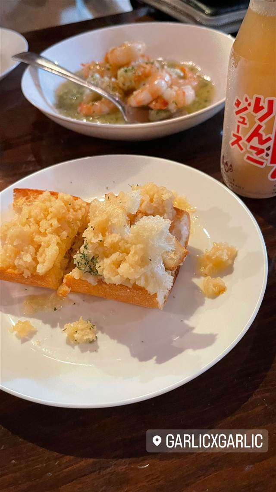
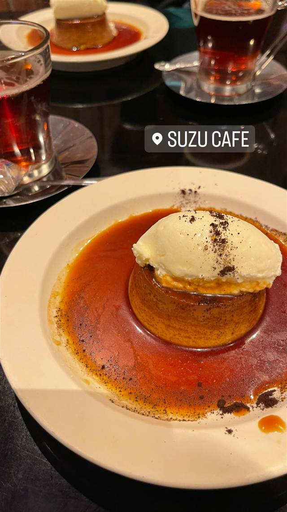

Garlic×Garlic 渋谷店
青森・田子町産にんにくたっぷりのガーリックトースト
GARLICXGARLIC
2012年7月に渋谷にオープンした、にんにく料理専門店。青森県田子町産のにんにくをふんだんに使った「ガーリックトースト」が名物で、テレビでも度々紹介されている。
TRIVIA
へえ、という話
- にんにくは青森県田子町産にこだわっている
- にんにく料理専門店としてテレビでもたびたび紹介されている
REVIEWS
みんなの声
「青森県産にんにくの匂いの少なさ」に注目
- 田子町産の上質なにんにくで食後も匂いが気になりにくいという声が多い
- ガーリックトーストのにんにくの香りとボリュームを評価する声が多い
ホットペッパー 口コミ73件
| 創業 | 2012年7月開業 |
|---|---|
| 看板 | ガーリックトースト |
| こだわり | 青森県田子町産にんにくをみじん切りにしてバゲットにたっぷりのせ、バターとオリーブオイルで旨味を引き出す |
| 掲載・受賞 | 「ヒルナンデス」など複数のテレビ番組で紹介 |
| 予算 | 昼 ¥2,001～¥3,000 夜 ¥4,001～¥5,000 |
| 定休日 | 月曜日 |
| 予約 | 予約可 |
| 場所 | 神泉 東京都渋谷区松濤1-26-2 1F |
食べたもの：ガーリックトースト
NEARBY
近い店・同じ系統の店
-
 パスタ 渋谷
KURA 渋谷店
元プロゴルファーら異業種出身者が始めた、もちもち生パスタ50種以上
昼 ¥1,000～¥1,999 夜 ¥2,000～¥2,999
パスタ 渋谷
KURA 渋谷店
元プロゴルファーら異業種出身者が始めた、もちもち生パスタ50種以上
昼 ¥1,000～¥1,999 夜 ¥2,000～¥2,999
-
 うなぎ 渋谷
渋谷マークシティ
昼 ¥2,000～¥3,000 夜 ¥2,000～¥3,000
うなぎ 渋谷
渋谷マークシティ
昼 ¥2,000～¥3,000 夜 ¥2,000～¥3,000
-
 ベトナム 渋谷駅
ミス・サイゴン（MISS SAIGON）
ベトナム人スタッフが作る野菜たっぷりのフォーとバインセオ
夜 ～¥5,999
ベトナム 渋谷駅
ミス・サイゴン（MISS SAIGON）
ベトナム人スタッフが作る野菜たっぷりのフォーとバインセオ
夜 ～¥5,999
-
 台湾 恵比寿
七一飯店
週1回だけの営業だった名残の店名、看板は魯肉飯
昼 ¥1,000～¥1,999 夜 ¥1,000～¥1,999
台湾 恵比寿
七一飯店
週1回だけの営業だった名残の店名、看板は魯肉飯
昼 ¥1,000～¥1,999 夜 ¥1,000～¥1,999
-

カフェ 渋谷 SUZU CAFE 神南 パティシエ手作りのクリームチーズ入りカスタードプリンが看板 昼 ¥1,000～¥1,999 夜 ¥2,000～¥2,999 -
 コーヒー 渋谷
Café Kitsuné Shibuya
パリ発ブランドのカフェ、狐にちなむ名を持つバゲットサンド
昼 ¥1,000～¥1,999 夜 ¥1,000～¥1,999
コーヒー 渋谷
Café Kitsuné Shibuya
パリ発ブランドのカフェ、狐にちなむ名を持つバゲットサンド
昼 ¥1,000～¥1,999 夜 ¥1,000～¥1,999